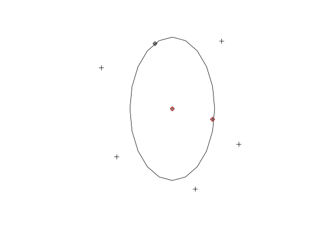

This function is a cross between the spatial subsetting funtions such as sp::over(), rgeos::gIntersects() etc, and the cropping functions of raster::crop() and rgeos::gIntersection(). The output is the subset of spatial object a with an outline described by a square bounding box. The utility of such a function is illustrated in the following question: http://gis.stackexchange.com/questions/46954/clip-spatial-object-to-bounding-box-in-r/.
gclip(shp, bb)
| shp | The spatial object a to be cropped |
|---|---|
| bb | the bounding box or spatial object that will be used to crop |
library(sp) data(cents) bb <- bbox(cents) cb <- rgeos::gBuffer(cents[8, ], width = 0.012, byid = TRUE)#> Warning: Spatial object is not projected; GEOS expects planar coordinatesplot(cents)plot(cb, add = TRUE)clipped <- gclip(cents, cb)#> Warning: spgeom1 and spgeom2 have different proj4 strings#>#> Warning: joining factors with different levels, coercing to character vectorrow.names(clipped)#> [1] "1928" "2029" "2034"clipped$avslope # gclip also returns the data attribute#> [1] 3.076791 2.762529 2.814496points(clipped)points(cents[cb,], col = "red") # note difference